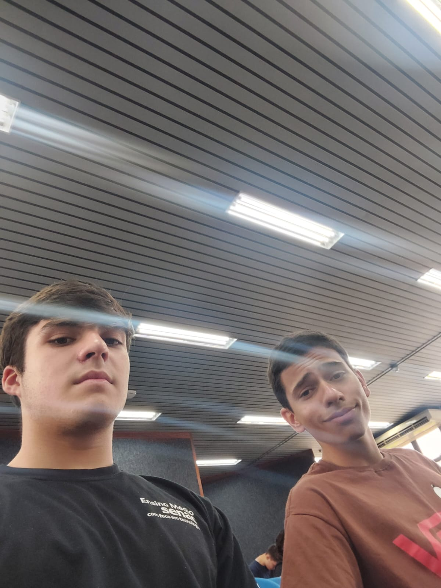
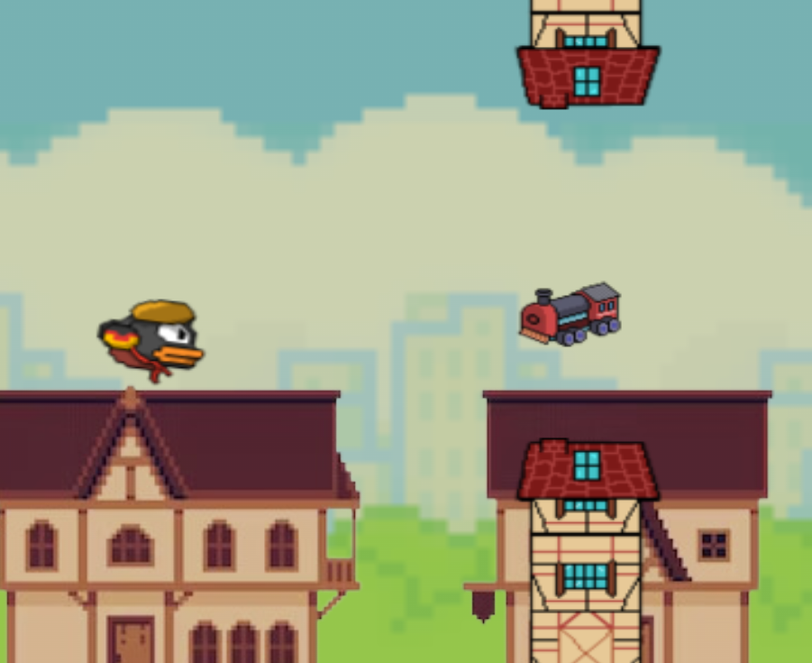

Olá,
Eu sou o
Eduardo Menezes
Estou no 2° do ensino médio
integrado ao técnico de T.I.


VOANDO PELA ROTA ROMÂNTICA!
Uma releitura do famoso jogo feito em 2013, flappy bird, o "Voando pela rota romântica" foi feito por um grupo de estudantes do primeiro ano do ensino médio SENAC São Leopoldo em comemoração ao bicêntenário da imigração alemã no brasil, apresentado na FEICIP, na EXPOINTER e na MOTIC 2024.
CALCULADORA DE PIADAS
Calculadora feita para um trabalho em aula.